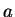
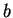
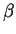
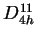
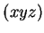

This option allows construction of a geometry file using the information of the International Tables for Crystollography, i.e. from the space group symbol. This can be done either in 2D or 3D. This option is useful if correct space group symmetry is required for the system to be constructed since tetr will automatically create all atoms in the cell from the minimum possible number of them; in other words, complete stars of atoms are created according to the specified space group.
The initial Pc-menu looks like this:
========= CHOOSE AN OPTION:
Sp. Select the space group from the list
At. Manually add an atom to the cell
Ad. Add atoms from another file
----- operations with multiple lists of atoms ------
------- g e n e r a l s e t t i n g s --------
UU. ****** Start AGAIN from scratch ******
U. ********** UNDO the last step *************
Dm. 3D space groups (for bulk)
XY. Produce <geom.xyz> file after every change for Xmol
Hs. H atoms to be added to <geom.xyz> file: NO
Q. Quit: return to the previous setting (if exists)
-----> Choose an appropriate option:
To start, choose first the dimension using option Dm. Then, choose the space group using option Sp. In the 2D case the corresponding menu is:
[ 1] p1 [ 2] p2 [ 3] pm [ 4] pg [ 5] cm [ 6] p2mm [ 7] p2mg [ 8] p2gg
[ 9] c2mm [ 10] p4 [ 11] p4mm [ 12] p4gm [ 13] p3 [ 14] p3m1 [ 15] p31m [ 16] p6
[ 17] p6mm
Choose the space group number from the Tables:
while in the 3D case the menu looks like this:
[ 1] C1_1 [ 2] Ci_1 [ 3] C2_1 [ 4] C2_2 [ 5] C2_3 [ 6] Cs_1 [ 7] Cs_2 [ 8] Cs_3
[ 9] Cs_4 [ 10] C2h_1 [ 11] C2h_2 [ 12] C2h_3 [ 13] C2h_4 [ 14] C2h_5 [ 15] C2h_6 [ 16] D2_1
[ 17] D2_2 [ 18] D2_3 [ 19] D2_4 [ 20] D2_5 [ 21] D2_6 [ 22] D2_7 [ 23] D2_8 [ 24] D2_9
[ 25] C2v_1 [ 26] C2v_2 [ 27] C2v_3 [ 28] C2v_4 [ 29] C2v_5 [ 30] C2v_6 [ 31] C2v_7 [ 32] C2v_8
[ 33] C2v_9 [ 34] C2v_10[ 35] C2v_11[ 36] C2v_12[ 37] C2v_13[ 38] C2v_14[ 39] C2v_15[ 40] C2v_16
[ 41] C2v_17[ 42] C2v_18[ 43] C2v_19[ 44] C2v_20[ 45] C2v_21[ 46] C2v_22[ 47] D2h_1 [ 48] D2h_2
[ 49] D2h_3 [ 50] D2h_4 [ 51] D2h_5 [ 52] D2h_6 [ 53] D2h_7 [ 54] D2h_8 [ 55] D2h_9 [ 56] D2h_10
[ 57] D2h_11[ 58] D2h_12[ 59] D2h_13[ 60] D2h_14[ 61] D2h_15[ 62] D2h_16[ 63] D2h_17[ 64] D2h_18
[ 65] D2h_19[ 66] D2h_20[ 67] D2h_21[ 68] D2h_22[ 69] D2h_23[ 70] D2h_24[ 71] D2h_25[ 72] D2h_26
[ 73] D2h_27[ 74] D2h_28[ 75] C4_1 [ 76] C4_2 [ 77] C4_3 [ 78] C4_4 [ 79] C4_5 [ 80] C4_6
[ 81] S4_1 [ 82] S4_2 [ 83] C4h_1 [ 84] C4h_2 [ 85] C4h_3 [ 86] C4h_4 [ 87] C4h_5 [ 88] C4h_6
[ 89] D4_1 [ 90] D4_2 [ 91] D4_3 [ 92] D4_4 [ 93] D4_5 [ 94] D4_6 [ 95] D4_7 [ 96] D4_8
[ 97] D4_9 [ 98] D4_10 [ 99] C4v_1 [100] C4v_2 [101] C4v_3 [102] C4v_4 [103] C4v_5 [104] C4v_6
[105] C4v_7 [106] C4v_8 [107] C4v_9 [108] C4v_10[109] C4v_11[110] C4v_12[111] D2d_1 [112] D2d_2
[113] D2d_3 [114] D2d_4 [115] D2d_5 [116] D2d_6 [117] D2d_7 [118] D2d_8 [119] D2d_9 [120] D2d_10
[121] D2d_11[122] D2d_12[123] D4h_1 [124] D4h_2 [125] D4h_3 [126] D4h_4 [127] D4h_5 [128] D4h_6
[129] D4h_7 [130] D4h_8 [131] D4h_9 [132] D4h_10[133] D4h_11[134] D4h_12[135] D4h_13[136] D4h_14
[137] D4h_15[138] D4h_16[139] D4h_17[140] D4h_18[141] D4h_19[142] D4h_20[143] C3_1 [144] C3_2
[145] C3_3 [146] C3_4 [147] C3i_1 [148] C3i_2 [149] D3_1 [150] D3_2 [151] D3_3 [152] D3_4
[153] D3_5 [154] D3_6 [155] D3_7 [156] C3v_1 [157] C3v_2 [158] C3v_3 [159] C3v_4 [160] C3v_5
[161] C3v_6 [162] D3d_1 [163] D3d_2 [164] D3d_3 [165] D3d_4 [166] D3d_5 [167] D3d_6 [168] C6_1
[169] C6_2 [170] C6_3 [171] C6_4 [172] C6_5 [173] C6_6 [174] C3h_1 [175] C6h_1 [176] C6h_2
[177] D6_1 [178] D6_2 [179] D6_3 [180] D6_4 [181] D6_5 [182] D6_6 [183] C6v_1 [184] C6v_2
[185] C6v_3 [186] C6v_4 [187] D3h_1 [188] D3h_2 [189] D3h_3 [190] D3h_4 [191] D6h_1 [192] D6h_2
[193] D6h_3 [194] D6h_4 [195] T_1 [196] T_2 [197] T_3 [198] T_4 [199] T_5 [200] Th_1
[201] Th_2 [202] Th_3 [203] Th_4 [204] Th_5 [205] Th_6 [206] Th_7 [207] O_1 [208] O_2
[209] O_3 [210] O_4 [211] O_5 [212] O_6 [213] O_7 [214] O_8 [215] Td_1 [216] Td_2
[217] Td_3 [218] Td_4 [219] Td_5 [220] Td_6 [221] Oh_1 [222] Oh_2 [223] Oh_3 [224] Oh_4
[225] Oh_5 [226] Oh_6 [227] Oh_7 [228] Oh_8 [229] Oh_9 [230] Oh_10
Choose the space group number from the Tables:
The number to be used to choose the group in either case is the correct group number in the Tables, while the symbol corresponds to the Schöonflis notations. Once the space group is known, a new option Lt appears that allows choosing the spacial parameters of the Bravais lattice, e.g. lengths

,
, of the conventional unit cell and the angles
and......O.K.! D4h_11 space group is found!!!
.... Crystal point-group is D4h
.... Singonia is: Tetragonal
.... Bravais lattice is: simple lattice
Specify cell via {a,c} (A)
After that, the space group is known completely so that it is possible to have a look at it (option Sy) in detail, e.g. the following information is shown for the group

:>>>>>>>>>>>> Space group <<<<<<<<<<<<<<<<<<
_i__KG__NAZ______{Fractional translation}_______Int.Tables___
1 1 UNIT 0.00000 0.00000 0.00000 (x,y,z)
2 7 C2X 0.00000 0.00000 0.50000 (x,-y,-z+1/2)
3 9 C2Y 0.00000 0.00000 0.50000 (-x,y,-z+1/2)
4 5 C2Z 0.00000 0.00000 0.00000 (-x,-y,z)
5 2 C4Z 0.50000 0.50000 0.50000 (-y+1/2,x+1/2,z+1/2)
6 6 -C4Z 0.50000 0.50000 -0.50000 (y+1/2,-x+1/2,z+1/2)
7 19 C22 0.50000 0.50000 0.00000 (y+1/2,x+1/2,-z)
8 20 C21 0.50000 -0.50000 0.00000 (-y+1/2,-x+1/2,-z)
9 48 I 0.50000 0.50000 0.50000 (-x+1/2,-y+1/2,-z+1/2)
10 26 PYZ 0.50000 -0.50000 0.00000 (-x+1/2,y+1/2,z)
11 27 PXZ 0.50000 0.50000 0.00000 (x+1/2,-y+1/2,z)
12 25 PXY 0.50000 0.50000 0.50000 (x+1/2,y+1/2,-z+1/2)
13 28 S4Z 0.00000 0.00000 0.00000 (y,-x,-z)
14 31 S4Z3 0.00000 0.00000 0.00000 (-y,x,-z)
15 43 P2 0.00000 0.00000 0.50000 (-y,-x,z+1/2)
16 42 P1 0.00000 0.00000 -0.50000 (y,x,z+1/2)
Hit ENTER when done ...
>>>>>>>> Reciprocal lattice vectors (up tp 2*pi) <<<<<<<<<<
vec 1 => 1.00000 0.00000 0.00000
vec 2 => 0.00000 1.00000 0.00000
vec 3 => 0.00000 0.00000 0.33333
Hit ENTER when done ...
The first column of the ``Space group'' table shows the space group operation number, the 2nd - the internal operation number (not important for the user), the 3rd - rotation/mirror operation name (see Figs. 2.1 and 2.2 and Section 2.5), then follows three columns with the fractional translation (can be shown either in fractional or Cartesian coordinates via option Ca; in the former case the fractional coordinates can be shown either with respect to the primitive or conventional cell via option Re). Finally, the last column shows the Tables notation for the group operation using a general position point

.Once the lattice has been specified, atoms in the unit cell can also be added using At and/or Ad. The former one allows atoms to be added one by one, the latter - from another file.
Then, by applying Gn you can generate the complete unit cell. In this case all group operations (shown in Sy) are applied to each of the atoms known at this stage, and new atoms are generated if found. If some of the atoms were there already, they will be removed, so that each position will appear only once. Thus, this way complete stars of atoms in the cell can be obtained. Note that you can use the option Gn at any stage. If new atoms are added (via At and/or Ad), then complete stars for these atoms can only be created by applying Gn again; otherwise, some starts may be incomplete. Thus, always apply Gn at the end of generating the cell. After the complete stars have been obtained, the Sy option will show which atoms of the cell are obtained from every atom bgy applying symmetry operations, e.g.
>>>>>>>>>>>> Space group <<<<<<<<<<<<<<<<<<
_i__KG__NAZ______{Fractional translation}_______Int.Tables___
1 1 UNIT 0.00000 0.00000 0.00000 (x,y,z)
2 7 C2X 0.00000 0.00000 1.50000 (x,-y,-z+1/2)
3 9 C2Y 0.00000 0.00000 1.50000 (-x,y,-z+1/2)
4 5 C2Z 0.00000 0.00000 0.00000 (-x,-y,z)
5 2 C4Z 0.50000 0.50000 1.50000 (-y+1/2,x+1/2,z+1/2)
6 6 -C4Z 0.50000 0.50000 -1.50000 (y+1/2,-x+1/2,z+1/2)
7 19 C22 0.50000 0.50000 0.00000 (y+1/2,x+1/2,-z)
8 20 C21 0.50000 -0.50000 0.00000 (-y+1/2,-x+1/2,-z)
9 48 I 0.50000 0.50000 1.50000 (-x+1/2,-y+1/2,-z+1/2)
10 26 PYZ 0.50000 -0.50000 0.00000 (-x+1/2,y+1/2,z)
11 27 PXZ 0.50000 0.50000 0.00000 (x+1/2,-y+1/2,z)
12 25 PXY 0.50000 0.50000 1.50000 (x+1/2,y+1/2,-z+1/2)
13 28 S4Z 0.00000 0.00000 0.00000 (y,-x,-z)
14 31 S4Z3 0.00000 0.00000 0.00000 (-y,x,-z)
15 43 P2 0.00000 0.00000 1.50000 (-y,-x,z+1/2)
16 42 P1 0.00000 0.00000 -1.50000 (y,x,z+1/2)
Hit ENTER when done ...
>>>>>>>> Reciprocal lattice vectors (up tp 2*pi) <<<<<<<<<<
vec 1 => 1.00000 0.00000 0.00000
vec 2 => 0.00000 1.00000 0.00000
vec 3 => 0.00000 0.00000 0.33333
Hit ENTER when done ...
>>>>>>>>>>>> Group operations on cell atoms <<<<<<<<<<<<<<<<<<
-- Si atom 1 is transformed into atoms:
1 2 2 1 3 3 4 4 3 4 4 3 1 1 2 2
-- Si atom 2 is transformed into atoms:
2 1 1 2 4 4 3 3 4 3 3 4 2 2 1 1
-- Si atom 3 is transformed into atoms:
3 4 4 3 1 1 2 2 1 2 2 1 3 3 4 4
-- Si atom 4 is transformed into atoms:
4 3 3 4 2 2 1 1 2 1 1 2 4 4 3 3
Hit ENTER when done ...
Option U1 appears after Gn has been applied, it keeps only first atoms of each star. This is useful if Wyckoff positions to be studied or during some intermediate stages of cell generation.
The complete menu at that stage may look like this:
========= CHOOSE AN OPTION:
Current number of atoms in the cell: 1
Current number of species: 1
Si[ 1]
Sp. Space group has been selected as D4h_11
Space group system : Tt
Bravais lattice type: SL0
Lt. Basic translations of the PRIMITIVE CELL:
vec 1 => 1.00000 0.00000 0.00000
vec 2 => 0.00000 1.00000 0.00000
vec 3 => 0.00000 0.00000 3.00000
At. Manually add an atom to the cell
Ad. Add atoms from another file
Gn. Generate the PRIMITIVE CELL
----- operations with multiple lists of atoms ------
T. Tag atoms (specify multiple lists): currently OFF
------- g e n e r a l s e t t i n g s --------
UU. ****** Start AGAIN from scratch ******
U. ********** UNDO the last step *************
Dm. 3D space groups (for bulk)
XY. Produce <geom.xyz> file after every change for Xmol
Hs. H atoms to be added to <geom.xyz> file: NO
An. [For input] Coordinates are specified in: <Angstroms>
Bb. Set the size of the breeding box for visualisation
>>>>> Current setting for the breeding box: <<<<<
[ 0... 0] x [ 0... 0] x [ 0... 0]
>>>>> extension = 1, # of atoms= 1
Sy. Show the symmetry
Ca. Fractional translations in Sy are in Cartesian
Re. Fractional translations in Sy reduced wrt primitive cell
Co. Show current atomic positions in fractional/Cartesian
W. Write <geom.xyz> file for preview using current breeding
P. Proceed: keep the curent setting
Q. Quit: return to the previous setting (if exists)
-----> Choose an appropriate option:
Additional options appear if atoms are tagged (option T):
----- operations with multiple lists of atoms ------
T. Untag atoms (multiple lists): currently ON
>> Current set of tagged atoms: 1
Rm. Remove tagged atoms with their stars
Rn. Rename tagged atoms: change species
Mv. Move tagged atoms to another general position
Rt. Rotate tagged atoms about the X,Y,Z axes
You can (similarly to the corresponding options of the M menu of Section 2.6.5):
Finally, you can save the obtained geometry using S or proceed to the main menu (option P) to apply other available operations on the constructed cell (e.g. from the M menu of Section 2.6.5). Option Q will take you out of the Pc menu, the geometry generated will be forgotten.